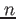

WendzelNNTPd is a tiny but easy to use Usenet server (NNTP server) for Linux, *nix and BSD. The server is written in C. For security reasons, it is compiled with stack smashing protection by default, if your compiler supports that feature.
WendzelNNTPd uses the GPLv3 license.
WendzelNNTPd contains a database abstraction layer. Currently supported database systems are SQlite3 and MySQL. New databases can be easily added.
WendzelNNTPd contains different security features, the probably most important feature are Access Control Lists (ACLs) as well as the Role Based Access Control (RBAC) system. ACL and RBAC are described in a own chapter. WendzelNNTPd is probably the first Usenet server with support for RBAC.
Another feature are ``invisible newsgroups'': If access control is activate, a user without permission will neither be able to see the existence of a newsgroup, nor will he be able to post to or read the newsgroup, if he would know about its existence.
In case a user sends a posting to two equal newsgroups within one post command's ``Newsgroups:'' header tag, the server will add it only once to save memory on the server and the time of the readers.
WendzelNNTPd supports IPv6. The server can listen on multiple IP addresses as well as multiple ports.
WendzelNNTPd does not implement all NNTP commands, but the (most) important ones. Another problem is that the used regular expression library is not 100% compatible with the NNTP matching in commands like ``XGTITLE''. A 3rd aspect is that WendzelNNTPd cannot share messages with other NNTP servers. Finally, WendzelNNTPd lacks support for encrypted connections.
See ``CONTRIBUTE'' file in the tarball.
The project started in 2004 under the name Xyria:cdpNNTPd, as part of the Xyria project that also contained a fast DNS server, called Xyria:DNSd. In 2007, I renamed it to WendzelNNTPd and stopped the development of Xyria:DNSd. Version 1.0.0 was released in 2007, version 2.0.0 in 2011. Since then I primarly fix reported bugs and add minor features to keep the software alive, which is also planned for the next ten years. A detailed history can be found in the ``HISTORY'' file in the tarball.
This chapter provides a guide on how to install WendzelNNTPd-OSE (Open Source Edition) 2.x.![[*]](footnote.png)
To install WendzelNNTPd from source you need to download the provided archive file (e.g. wendzelnntpd-2.0.0.tar.gz) file. Extract it and run ./configure. Please note that configure indicates missing libraries and packets that you may first need to install using the package system of your operating system.
$ tar -xzf wendzelnntpd-2.0.0.tgz $ cd wendzelnntpd $ ./configure ...
Please Note: If you wish to compile WITHOUT MySQL or WITHOUT SQlite support, then run MYSQL=NO ./configure or SQLITE=NO ./configure, respectively.
After configure finished, run make:
$ make ...
To install WendzelNNTPd on your system, you need superuser access. Run make install to install it to the default location /usr/local/*.
$ sudo make install
Please Note (Upgrades): Run sudo make upgrade instead of sudo make install for an upgrade. Please cf. Section 5.
Please Note (MySQL): If you plan to run MySQL, then no database was set up during 'make install'. Please refer to chapter 3 (configuration) to learn how to generate the MySQL database.
There is a init script in the directory scripts/startup. It uses the usual parameters like ``start'', ``stop'' and ``restart''.
A user reported WendzelNNTPd-2.0.0 is installable under Mac OS X 10.5.8. The only necessary change was to add the flag ``-arch x86_64'' to compile the code on a 64 bit system. However, I never tried to compile WendzelNNTPd on a Mac.
Not supported.
This chapter will explain how to configure WendzelNNTPd once it has been installed on your system.
Note: The configuration file of WendzelNNTPd is named /usr/local/etc/wendzelnntpd.conf. The format of the configuration file should be self describing and the standard config file includes many comments which will help you to understand the lines you can see and modify there.
Note: On *nix-like operating systems the default installation path is /usr/local/* what means that the configuration file of WendzelNNTPd will be /usr/local/etc/wendzelnntpd.conf, and the binaries will be placed in /usr/local/sbin.
The first, and most important step, is to choose a database engine. You can either use SQlite3 (what is the default case and easy to use, but not very performant) or MySQL (what is of course the better solution, but also a little bit more complicated to realize). By default, WendzelNNTPd is configured for SQlite3 and is ready to run. If you want to keep this setting, you do not have to read this section.
In your configuration file, you will find a line called database-engine. Here you can either write sqlite or mysql.
database-engine mysql
If you use MySQL, you also need to specify the user and password which WendzelNNTPd should use to connect to the server. If your server does not run on the localhost or uses not the default MySQL port, you have to modify these values too.
; Your database hostname (not needed for sqlite3) database-server 127.0.0.1 ; the database connection port (not needed for sqlite3) ; Comment out to use the default port of your database engine database-port 3306 ; Server authentication (not needed for sqlite3) database-username mysqluser database-password supercoolpass
Once you have chosen your database, you need to create the (database and) table in your database.
In the case of SQlite, make install already did this for you.
For MySQL, a SQL script file is included called mysql_db_struct.sql. It creates the WendzelNNTPd database as well as all needed tables. Use the MySQL console tool to execute the script.
$ cd /path/to/your/extracted/wendzelnntpd-archive/ $ mysql -u YOUR-USER -p Enter password: Welcome to the MySQL monitor. Commands end with ; or \g. Your MySQL connection id is 48 Server version: 5.1.37-1ubuntu5.1 (Ubuntu) Type 'help;' or '\h' for help. Type '\c' to clear the current input statement. mysql> source mysql\_db\_struct.sql ... mysql> quit Bye
Now you should specify the IP addresses (IPv4 or IPv6) for WendzelNNTPd to accept connections on, as well as the TCP port (the NNTP default port is 119) to run on.
; You have to specify the port _before_ using the 'listen' command! port 119 ; network addresses to listen on listen 127.0.0.1 listen ::1 listen 192.168.0.1
You could also use different ports for different IP addresses by placing a port command right before each listen command but this is not recommended.
If you have any problems running WendzelNNTPd or if you simply want more information about what is happening, you can uncomment the verbose-mode line.
; Uncomment 'verbose-mode' if you want to find errors or if you ; have problems with the logging subsystem. All log strings are ; written to stderr too, if verbose-mode is set. Additionaly all ; commands sent by clients are written to stderr too (but not to ; logfile) verbose-mode
WendzelNNTPd contains an extensive access control subsystem. If you want to allow only authenticated users the access to the server, you should uncomment use-authentication. This gives every authenticated user access to each newsgroup.
; Activate authentication use-authentication
If you need a really advanced authentication system, you can activate Access Control Lists (ACL) by uncommenting use-acl. This activates the support for Role based ACL too.
; If you activated authentication, you can also activate access ; control lists (ACL) use-acl
By default, WendzelNNTPd makes a users hostname or IP part of new message-IDs when a user sents a posting using the NNTP POST command. If you do not want that, you can force WendzelNNTPd not to do that by uncommenting enable-anonym-mids, what enables anonymized Message-IDs.
; This prevents that IPs or Hostnames will become part of the ; message ID generated by WendzelNNTPd what is the default case. ; Uncomment it to enable this feature. enable-anonym-mids
Once your WendzelNNTPd installation has been configured, you can run the server (in the default case you need superuser access to do that since this is required to bind WendzelNNTPd to the default NNTP port 119) by starting /usr/local/sbin/wendzelnntpd.
$ /usr/local/sbin/wendzelnntpd WendzelNNTPd-OSE (Open Source Edition): peak: 3, size_sockinfo: 1 WendzelNNTPd-OSE (Open Source Edition): version 1.9.0-pre-alpha 'Stockholm' - (Mar 5 2010 21:36:19 #2326) is ready.
Note (Daemon Mode): If you want to run WendzelNNTPd as a background daemon process on *nix-like operating systems, you should use the parameter -d.
Note (Admininstration Tool): Use the command line tool wendzelnntpadm to configure user, role and newsgroup settings of your WendzelNNTPd installation. To get an overview of supported commands, run ``wendzelnntpadm help'':
$ wendzelnntpadm help usage: wendzelnntpd <command> [parameters] *** Newsgroup Administration: <listgroups> <addgroup | modgroup> <newsgroup> <posting-allowed-flag (y/n)> <delgroup> <newsgroup> *** User Administration: <listusers> <adduser> <username> [<password>] <deluser> <username> *** ACL (Access Control List) Administration: <listacl> <addacluser | delacluser> <username> <newsgroup> <addaclrole | delaclrole> <role> <rolegroupconnect | rolegroupunconnect> <role> <newsgroup> <roleuserconnect | roleuserunconnect> <role> <username>
You can either list, create or delete newsgroups using wendzelnntpadm.
$ wendzelnntpadm listgroups Newsgroup, Low-, High-Value, Posting-Flag ----------------------------------------- alt.test 10 1 y mgmt.talk 1 1 y secret.project-x 20 1 y done.
To create a new newsgroup run the following command:
$ wendzelnntpadm addgroup my.cool.group y Newsgroup my.cool.group does not exist. Creating new group. done.
You can also change the ``posting allowed'' flag of a newsgroup but this takes currently no effect since WendzelNNTPd handles all newsgroups as newsgroups with posting allowed.
$ wendzelnntpadm modgroup my.cool.group y Newsgroup my.cool.group exists: okay. done. $ wendzelnntpadm modgroup my.cool.group n Newsgroup my.cool.group exists: okay. done.
$ wendzelnntpadm delgroup my.cool.group Newsgroup my.cool.group exists: okay. Clearing association class ... done Clearing ACL associations of newsgroup my.cool.group... done Clearing ACL role associations of newsgroup my.cool.group... done Deleting newsgroup my.cool.group itself ... done Cleanup: Deleting postings that do not belong to an existing newsgroup ... done done.
The easiest way to give only some people access to your server is to create user accounts (please make sure you activated authentication in your configuration file). You can add, delete and list all users.
This command always prints you the password of a user too.
$ wendzelnntpadm listusers Username, Password ------------------ developer1, wegerhgrhtrthjtzj developer2, erghnrehhnht manager1, wegergergrhth manager2, thnthnrothnht swendzel, lalalegergreg swendzel2, 94j5z5jh5th swendzel3, lalalalala swendzel4, wegwegwegwegweg done.
You can either enter the password as additional parameter (usefull for scripts that create users automatically) ...
$ wendzelnntpadm adduser UserName HisPassWord User UserName does currently not exist: okay. done.
... or you can type it using the prompt (in this case the input is shadowed):
$ wendzelnntpadm adduser UserName2 Enter new password for this user (max. 100 chars): User UserName2 does currently not exist: okay. done.
Please Note: A password must include at least 8 characters and may not include more than 100 characters.
$ wendzelnntpadm deluser UserName2 User UserName2 exists: okay. Clearing ACL associations of user UserName2... done Clearing ACL role associations of user UserName2... done Deleting user UserName2 from database ... done done.
Welcome to the advanced part of WendzelNNTPd. WendzelNNTPd includes a powerful role based access control system. You can either only use normal access control lists where you can configure which user will have access to which newsgroup. Or you can use the advanced role system: You can add users to roles (e.g. the user ``boss99'' to the role ``management'') and give a role access to a group (e.g. role ``management'' shall have access to ``discuss.management'').
Note: Please note that you must activate the ACL feature in your configuration file to use it.
Note: To see *ALL* data related to the ACL subsystem of your WendzelNNTPd installation, simply use ``wendzelnntpadm listacl''.
WendzelNNTPd includes a feature called ``Invisible Newsgroups'' which means that a user without access to a newsgroup will neither see the newsgroup in the list of newsgroups, nor will he be able to post to such a newsgroup or will be able to read it.
We should start with the simple access control where you can define which user should have access to which newsgroup.
$ wendzelnntpadm addacluser swendzel alt.test User swendzel exists: okay. Newsgroup alt.test exists: okay. done. $ wendzelnntpadm listacl List of roles in database: Roles ----- Connections between users and roles: Role, User ---------- Username, Has access to group ----------------------------- swendzel, alt.test Role, Has access to group ------------------------- done.
$ wendzelnntpadm delacluser swendzel alt.test User swendzel exists: okay. Newsgroup alt.test exists: okay. done.
If you have many users, some of them should have access to the same newsgroup (e.g. the developers of a new system should have access to the development newsgroup of the system). With roles you do not have to give every user explicit access to such a group. Instead you add the users to a role and give the role access to the group. (One advantage is that you can easily give the complete role access to another group with only one command instead of adding each of its users to the list of people who have access to the new group).
In the following examples, we give the users ``developer1'', ``developer2'', and ``developer3'' access to the development role of ``project-x'' and connect their role to the newsgroups ``project-x.discussion'' and ``project-x.support''. To do so, we create the three users and the two newsgroups first:
$ wendzelnntpadm adduser developer1 Enter new password for this user (max. 100 chars): User developer1 does currently not exist: okay. done. $ wendzelnntpadm adduser developer2 Enter new password for this user (max. 100 chars): User developer2 does currently not exist: okay. done. $ wendzelnntpadm adduser developer3 Enter new password for this user (max. 100 chars): User developer3 does currently not exist: okay. done. $ wendzelnntpadm addgroup project-x.discussion y Newsgroup project-x.discussion does not exist. Creating new group. done. $ wendzelnntpadm addgroup project-x.support y Newsgroup project-x.support does not exist. Creating new group. done.
Before you can add users to a role and before you can connect a role to a newsgroup, you have to create a role (you have to choose an ASCII name for it). In this example, the group is called ``project-x''.
$ wendzelnntpadm addaclrole project-x Role project-x does not exists: okay. done.
You can delete a role by using ``delaclrole'' instead of ``addaclrole'' like in the example above.
To add (connect) or remove (disconnect) a user to/from a role, you need to use the admin tool too.
The second parameter (``project-x'') is the role name and the third parameter (``developer1'') is the username. Here we add our 3 developer users from the example above to the group project-x:
$ wendzelnntpadm roleuserconnect project-x developer1 Role project-x exists: okay. User developer1 exists: okay. Connecting role project-x with user developer1 ... done done. $ wendzelnntpadm roleuserconnect project-x developer2 Role project-x exists: okay. User developer2 exists: okay. Connecting role project-x with user developer2 ... done done. $ wendzelnntpadm roleuserconnect project-x developer3 Role project-x exists: okay. User developer3 exists: okay. Connecting role project-x with user developer3 ... done done.
$ wendzelnntpadm roleuserconnect project-x developer1 Role project-x exists: okay. User developer1 exists: okay. Connecting role project-x with user developer1 ... done done.
Even if a role is connected with a set of users, it is still useless until you connect the role with a newsgroup.
To connect a role with a newsgroup, we have to use the command line tool for a last time (the 2nd parameter is the role, and the 3rd parameter is the name of the newsgroup). Here we connect our ``project-x'' role to the two newsgroups ``project-x.discussion'' and ``project-x.support'':
$ wendzelnntpadm rolegroupconnect project-x project-x.discussion Role project-x exists: okay. Newsgroup project-x.discussion exists: okay. Connecting role project-x with newsgroup project-x.discussion ... done done. $ wendzelnntpadm rolegroupconnect project-x project-x.support Role project-x exists: okay. Newsgroup project-x.support exists: okay. Connecting role project-x with newsgroup project-x.support ... done done.
This is done like in the example above but you have to use the command ``rolegroupunconnect'' instead of ``rolegroupconnect''.
Like mentioned before, you can use the command ``listacl'' to list your whole ACL configuration (except the list of users that will be listed by the command ``listusers'').
$ wendzelnntpadm listacl List of roles in database: Roles ----- project-x Connections between users and roles: Role, User ---------- project-x, developer1 project-x, developer2 project-x, developer3 Username, Has access to group ----------------------------- swendzel, alt.test Role, Has access to group ------------------------- project-x, project-x.discussion project-x, project-x.support done.
As mentioned above, you as the maintainer of the usenet server can safe time by using roles. If you add a new developer to the system, and the developer should have access to the two groups ``project-x.discussion'' and ``project-x.support'', you do not have to assign the user to both (or even more) groups. Instead, you just add the user to the role ``project-x'' that is already connected to both groups.
If you want to give all developers access to the group ``project-x.news'', you also do not have to connect every developer with the project. Instead, you just connect the rule with the newsgroup, what is one command instead of  commands. Of course, this time saving concept also works if you want to delete a user.
Besides the already mentioned authentification, ACL and RBAC features, the security of the server can be improved by putting WendzelNNTPd in a chroot environment or letting it run under an unpriviledged user account (the user then needs write access to /var/spool/news/wendzelnntpd and read access to (/usr/local)/etc/wendzelnntpd.conf). An unpriviledged user under Unix-like systems is also not able to create a listen socket on the default NNTP port (119) since all ports up to 1023 are reserved. This means that the server should use a port >= 1024 if it is started by a non-root user. Note: Some Unix systems may have another priviledged port configuration.
Stop WendzelNNTPd if it is currently running. Install WendzelNNTPd as described but run make upgrade instead of make install. Afterwards, start WendzelNNTPd again.
Acknowledgement: I would like to thank Ann from Href.com for helping a lot with finding out how to upgrade from 1.4.x to 2.0.x!
An upgrade from version 1.4.x was not foreseen due to the limited available time I have for the development. However, here is a dirty hack:
Run MYSQL=NO ./configure, make, and sudo make install. This will compile, build and install WendzelNNTPd without MySQL support as you only rely on SQLite3 from v.1.4.x.
database-engine sqlite3
The following step is a very dirty hack but I hope it works for you. It is not 100% perfect as important table columns are then still of the type 'STRING' instead of the type 'TEXT'!
Load the sqlite3 tool with your replaced database file:
$ sudo sqlite3 /var/spool/news/wendzelnntpd/usenet.db
This will open the new file in editing mode. We now add the tables which are not part of v.1.4.x to your existing database file. Therefore enter the following commands:
CREATE TABLE roles (role TEXT PRIMARY KEY); CREATE TABLE users2roles (username TEXT, role TEXT, PRIMARY KEY(username, role)); CREATE TABLE acl_users (username TEXT, ng TEXT, PRIMARY KEY(username, ng)); CREATE TABLE acl_roles (role TEXT, ng TEXT, PRIMARY KEY(role, ng)); .quit
You will probably see no posting bodies right now if postings are requested by your client. Therefore, switch into /var/spool/news/wendzelnntpd and run (as superuser) this command, it will replace the broken trailings with corrected ones:
for filn in `/bin/ls cdp*`; do echo $filn; cat $filn | \
sed 's/\.\r/.\r\n/' > new; num=`wc -l new| \
awk '{$minone=$1-1; print $minone}'` ; \
head -n $num new > $filn; done
First check, whether the datbase file is accepted at all:
$ sudo wendzelnntpadm listgroups
It should list all your newsgroups
$ sudo wendzelnntpadm listusers
It should list all existing users. Accordingly
$ sudo wendzelnntpadm listacl
should list all access control entries (which will be empty right now but if no error message appears, the related tables are now part of your database file!).
Now start WendzelNNTPd via sudo wendzelnntpd and try to connect with an NNTP client to your WendzelNNTPd and then try reading postings and try sending new postings and try replying to these.
If this works, you can now run v2.x on 32bit and 64bit Linux :)
This document was generated using the LaTeX2HTML translator Version 2008 (1.71)
Copyright © 1993, 1994, 1995, 1996,
Nikos Drakos,
Computer Based Learning Unit, University of Leeds.
Copyright © 1997, 1998, 1999,
Ross Moore,
Mathematics Department, Macquarie University, Sydney.
The command line arguments were:
latex2html -show_section_numbers -local_icons -split 2 docs.tex
The translation was initiated by Steffen Wendzel on 2015-03-29